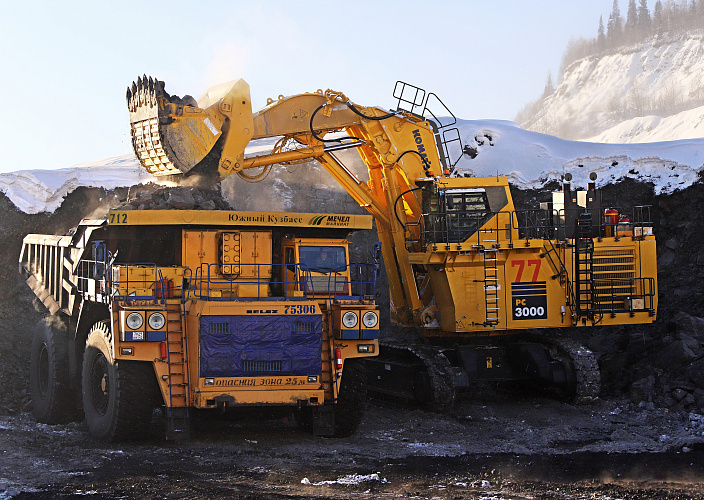

О компании
Направление деятельности «Мечел»
Дата основания «Мечел»
19 марта 2003 г.
Направление деятельности
Челябинский металлургический комбинат — советское и российское промышленное предприятие,
входящее в состав ведущей российской горнодобывающей и металлургической компании «Мечел».
«Мечел» объединяет более 20 промышленных предприятий.
Это производители угля, железной руды, стали, проката, ферросплавов, тепловой и электрической энергии.
Все предприятия работают в единой производственной цепочке: от добычи сырья до продукции с высокой добавленной стоимостью.
В состав холдинга также входят три торговых порта, собственные транспортные операторы, сбытовые и сервисные сети.
Продукция «Мечела» реализуется на российском и зарубежных рынках.
«Мечел» находится в числе российских лидеров по производству концентрата коксующегося угля.
Компания контролирует более четверти мощностей по обогащению коксующегося угля в стране.
«Мечел» – один из крупнейших российских производителей сортового проката и метизной продукции.
Компания также является наиболее многопрофильным производителем специальных сталей и сплавов в России.
Металлоторговая сеть «Мечела» насчитывает более 80 подразделений, в том числе 18 сервисных центров.
В ее состав входят российская компания «Мечел-Сервис», дочерние компании в странах СНГ, Западной и Восточной Европе.

История создания «Мечел»
Компания образовалась в 2003 году.
Именно тогда угольная компания «Южный Кузбасс», летом 2002-го получившая контроль над Челябинским металлургическим комбинатом,
объявила о слиянии с компанией «Мечел» в «Стальную группу «Мечел». Они и стали ядром будущей корпорации и базой для
последующего развития.
С их объединения в одну цепочку производителей угля и стали компания начала расти,
продолжилась дальнейшая консолидация активов и развитие Группы «Мечел». Огромным многопрофильным холдингом,
занимающимся добычей угля и железной руды, черной металлургией, производством металлопроката и энергетикой,
«Мечел» стал позже, когда в состав его вошли другие компании, заводы и морские порты.
Однако история «Мечел» начиналась раньше, когда небольшая компания «Углемет»,
основанная в 1994 Игорем Зюзиным, завладела «большей частью экспортной квоты на уголь шахты «Распадская»
и в Междуреченске Кемеровской области занялась поставками угля и стального проката на отечественный рынок и за рубеж.
Свои производственные активы в виде компании «Южный Кузбасс», объединявшей угледобывающие и другие вспомогательные
предприятия близ Междуреченска (шахты и угольные разрезы, обогатительные фабрики, погрузочно-транспортное предприятие и др.),
и ЧМК «Мечел», который, собственно, и дал название холдингу, «Углемет» приобретал позднее.
А если обратиться к истории Челябинского металлургического комбината, по сей день остающегося флагманом
металлургического дивизиона компании, его строительство началось еще в марте 1942 года.
А к весне 1945-го он уже был самым крупным в стране поставщиком высококачественной электростали,
обеспечивая нужды оборонной промышленности, подшипниковых заводов и ряда других предприятий.
С 2001 года компания активно разрастается, в ее состав вливаются новые приобретения акционеров в России и за рубежом,
позволяющие осваивать новые перспективные рынки сбыта продукции.

Одновременно с активным ростом компания осуществляет модернизацию основных производств, строит железную дорогу от станции
Улак БАМа к Эльгинскому месторождению в Якутии.
С кризисом 2008 года у «Мечела» настали трудные времена. На середину 2009 пришелся пик падения производства: на 75% сократилось производство коксующегося угля,
на четверть – железорудного концентрата. Но все предприятия продолжали работать, а к концу года постепенно выравнивалась ситуация, даже выросла добыча угля и
заключались новые долгосрочные контракты. Организация работы предприятий Группы в единой производственной цепи, централизованное решение самых важных вопросов,
касающихся работы предприятий, позволяли компании сохранять положение, выгодно отличавшееся от ситуации, в какой оказались коллеги по отрасли.
«Мечел» реализовывал наиболее приоритетные проекты, среди которых подготовка к строительству универсального рельсобалочного стана на ЧМК, реконструкция
сталеплавильного производства на «Ижстали», строительство подъездного железнодорожного пути к Эльгинскому месторождению (завершилось в 2011), освоение производства
стальных канатов из пластически обжатых прядей на Белорецком металлургическом комбинате и другие. А с приобретением американской угледобывающей компании Bluestone
«Мечел» заставил считаться с собой участников мирового рынка концентрата коксующегося угля, став реально глобальным игроком.
«Мечел» продолжает расширяться. Среди новых приобретений — металлургический завод «Ламинорул Браила» в Румынии, турецкая металлоторговая группа Ramateks,
ОАО «Ванинский морской торговый порт».
На покупку металлургических и угольных активов компания потратила миллиарды заемных долларов, чем заслужила славу одной из самых
закредитованных российских компаний. Ее могли распродать по частям, но договоренность о реструктуризации задолженности
с
основными кредиторами Группы (Газпромбанк, ВТБ, Сбербанк)
была достигнута, и «Мечел» продолжает работать.
Собственники и руководители «Мечел»
Собственник
Владельцем Челябинского металлургического комбината является ПАО «Мечел»,
подконтрольное мультимиллионеру Игорю Зюзину.
Руководители
- Генеральный директор ЧМК в 1992-1995 гг.: Воробьев Николай Иванович;
- Генеральный директор ЧМК в 1995-2005 гг.: Иорих Владимир Филиппович;
- Управляющий директор ЧМК в 2005-2011 гг.: Малышев Сергей Евстафьевич;
- Управляющий директор ЧМК в 2011-2016 гг.: Нугуманов Рашид Фасхиевич;
- Управляющий директор ЧМК с 2016 года: Щетинин Анатолий Петрович.